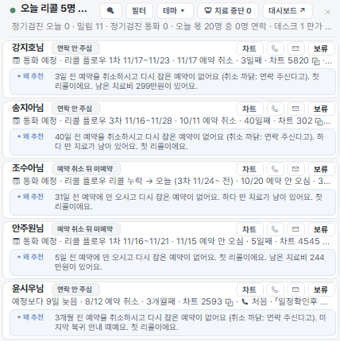
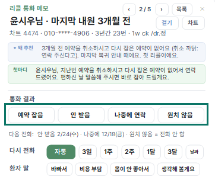

홈 › 덴트웹 리콜 자동화
덴트웹 리콜 자동화 — 리콜 명단부터 통화 기록까지
덴트웹으로 리콜 명단을 뽑고, 누구부터 걸지 정하고, 통화 뒤 차트에 적는 일은 매일 되풀이됩니다. 치과 데스크알리미는 이 일을 덴트웹 화면 위에서 자동으로 챙깁니다.
덴트웹 리콜, 손으로 할 때와 자동화했을 때
본원 데스크에서 실제로 쓰는 기능만 적었습니다.
| 리콜 일 | 손으로 할 때 | 치과 데스크알리미로 자동화 |
|---|---|---|
| 리콜 명단 뽑기 | 마지막 내원일이 오래됐는데 다음 예약이 없는 환자를 조회해 엑셀·종이에 옮김 | 다시 오셔야 하는데 예약이 없는 분을 매일 골라 막대 [리콜]에 띄움 |
| 누구부터 걸지 | 명단을 묶음으로 나누고 순서를 직접 정함 | [테마 ▾] 묶음마다 지금 챙길 분 수 · ★ 는 먼저 챙길 테마 |
| 첫마디 | 전화 전에 차트에서 마지막 치료·취소한 예약을 확인 | 「왜 추천」 이유와 초록 첫마디 상자를 읽으며 전화 |
| 「3월에 갈게요」 | 달력·장부에 따로 적어 두고 그 달에 확인 | 히든메모의 말을 읽어 두었다가 그 달 1일에 리콜 카드로 |
| 통화 기록 | 통화 직후 차트 메모에 날짜·결과·다음 연락일을 적음 | 결과 하나 누르고 [메모 저장] → 덴트웹 차트에 저절로 |
| 리콜 보고 | 엑셀에 이름·결과·예약 여부를 적어 합계를 냄 | 기록이 알아서 쌓이고 대시보드에서 누가 예약했는지 보임 |

리콜 명단을 매일 알아서
덴트웹의 진료·예약·메모 기록을 읽고, 다시 오셔야 하는데 앞으로 잡힌 예약이 없는 분을 골라 막대 [리콜]에 오늘 명단을 보여 줍니다. 막대의 숫자는 아직 전화하지 않은 분 수이고, 다 하면 0이 됩니다.
목록 위 [테마 ▾]로 「치료 중단 · 6개월」「12세 전 레진」「임플란트 보철 미완료」「환자가 말한 때」처럼 묶음별로만 볼 수 있습니다.
통화 결과는 덴트웹 차트에 저절로
통화 메모 창에서 결과를 하나 누르고 [메모 저장]을 누르면 덴트웹 차트에 적힙니다.
- 예약 잡음
- 추가 메모에 예약 날짜를 적습니다.
- 안 받음
- 다시 걸 날을 고릅니다. 모르면 [자동].
- 나중에 연락
- 누른 결과에 따라 다음 전화 날이 정해집니다.
- 원치 않음
- 다음 내원까지 추천에서 빠집니다.

리콜 추천 순서, 본원 기록으로 되짚어 본 숫자
치과 데스크알리미를 만든 치과 한 곳의 덴트웹 리콜 전화 기록을 되짚어, 전화한 뒤 60일 안에 실제로 접수(내원)하셨는지 셌습니다.
- 리콜 전화 747번
- 2022년 7월 ~ 2025년 6월 · 전체 평균 11.1% · 추천 순서 위쪽 20%에게만 걸었다면: 예전 순서(놓친 예약 먼저) 8.7% → 최근 내원·검진 다니심·단골 등으로 정한 순서 28.2%
- 리콜 전화 2,716번
- 2023년 10월 ~ 2026년 8월 · 그때 알 수 있던 것만으로 추천 점수를 다시 매겨 5묶음으로 나눔 · 점수 가장 높은 묶음 40.3% · 가장 낮은 묶음 10.7%
| 이런 분이면 | 전화 뒤 60일 안에 오신 비율 | 아니면 |
|---|---|---|
| 마지막 내원이 3개월이 안 됨 | 29% | 9% |
| 검진·스케일링 다니심 (3년간 3번 이상) | 22% | 7% |
| 단골 (3년간 11번 이상 내원) | 20% | 7% |
한 치과의 기록입니다. 「이렇게 하면 몇 % 온다」는 약속이 아니라 누구부터 걸지 정하는 방향으로 봐 주세요. 「같이 나타났다」는 뜻이지 「그것 때문에 왔다」는 뜻은 아닙니다. 남은 치료비·누적 수납이 큰 분은 평균보다 높지 않았습니다. 셈 방법은 리콜 숫자의 출처에 있습니다.
손으로 하는 리콜, 단계별로
덴트웹 리콜을 손으로 할 때 거치는 단계입니다. 치과 데스크알리미로 할 때를 함께 적었습니다.
치과 리콜 전화할 때 첫마디는 뭐라고 해요?
- 전화 전에 차트에서 마지막 치료·취소한 예약을 확인해요.
- 치과 이름 → 전화한 이유 → 예약 제안 순서로 말해요.
- 원치 않으시면 다시 전화하지 않는다고 기록해요.
치과 데스크알리미로는 데스크알리미 통화 메모 창의 초록 첫마디 상자에 그 환자에게 할 말이 적혀 있어서 읽으며 전화하면 돼요. 창 위쪽 「왜 추천」 줄에 이유(예: 「3개월 전 예약을 취소하시고 다시 잡은 예약이 없어요」)가 있어요.
치료 중단 환자(중간에 안 오는 환자)는 어떻게 관리해요?
- 주 1회 정도 취소·미내원 기록을 보고 다음 예약이 없는 분을 골라요.
- 치료가 어디까지 됐는지 메모해 두고 전화해요.
- 통화 결과(예약/안 받음/나중에/원치 않음)를 차트에 남겨요.
치과 데스크알리미로는 데스크알리미 리콜 [테마 ▾]의 「치료 중단 · 6개월」은 최근 6개월 안에 예약을 취소하거나 안 오시고, 그 뒤 다시 잡은 예약이 없는 분들만 모아 보여 줘요. 줄마다 「왜 추천」 이유가 있고 [📞]로 바로 통화 메모를 열어요.
임플란트 수술은 했는데 보철을 안 한 환자는 어떻게 찾아요?
- 임플란트 수술한 환자 목록을 뽑아요.
- 그중 보철 기록이 아직 없는 분을 차트에서 하나씩 확인해요.
- 다음 예약이 없으면 리콜 명단에 넣어요.
치과 데스크알리미로는 데스크알리미 리콜 [테마 ▾]에 「임플란트 보철 미완료」 묶음이 있어서, 해당하는 분들만 목록에 남겨 보고 바로 전화할 수 있어요.
리콜하고 나서 원장님께 올릴 보고서는 어떻게 쉽게 써요?
- 통화할 때마다 엑셀에 이름·결과·예약 여부를 적어요.
- 하루 끝에 합계(통화 수·예약 수)를 내서 보고해요.
치과 데스크알리미로는 데스크알리미는 통화 결과를 누르면 기록이 알아서 쌓이고, 리콜·지각·수술 숫자와 마감 보고를 대시보드에서 볼 수 있어요. 누가 실제로 예약하셨는지도 한눈에 보여요.
자주 묻는 질문
- 덴트웹에서 리콜할 환자 목록은 어떻게 뽑아요?
- 손으로 하면 "마지막 내원일이 오래됐는데 다음 예약이 없는 환자"를 조회해서 전화 명단을 만들어요. 덴트웹 화면 위에 데스크알리미를 깔면 이 명단을 매일 알아서 만들어 막대 [리콜]에 띄우고, 한 분마다 왜 전화하는지와 첫마디까지 적어 줘요.
- 치과 리콜 전화, 누구한테 먼저 해야 해요?
- 전화하면 실제로 오실 분부터 거세요. ① "3월에 갈게요"처럼 환자분이 직접 말한 때가 된 분 ② 꼬박꼬박 오시던 분(VIP) 중 주기가 조금 밀린 분 ③ 치료를 멈춘 지 얼마 안 된 분 순서예요. 오래된 명단은 남는 시간에 해요.
- "3월에 올게요" 한 환자를 잊지 않고 챙기려면요?
- 손으로는 달력이나 별도 장부에 "3월 연락"이라고 적어 두고 그 달에 확인해요. 문제는 메모가 차트 안에 묻혀 그 달이 와도 아무도 못 보는 거예요.
- 리콜 통화 결과를 차트에 빨리 기록하는 방법은요?
- 손으로는 통화가 끝날 때마다 차트 메모에 날짜·결과·다음 연락일을 적어요. 전화가 많으면 기록이 밀리고, 나중에 "이분 전화했었나?"를 다시 찾게 돼요.
- 치료 중단 환자(중간에 안 오는 환자)는 어떻게 관리해요?
- 예약을 취소하거나 안 오신 뒤 다시 예약을 안 잡은 분을 정기적으로 뽑아서 전화하는 게 기본이에요. 시간이 오래 지날수록 다시 오시기 어려워서, 최근에 끊긴 분부터 빨리 연락하는 게 좋아요.
- 임플란트 수술은 했는데 보철을 안 한 환자는 어떻게 찾아요?
- 손으로는 임플란트 수술 기록이 있는데 보철(크라운) 기록이 없는 환자를 차트에서 하나씩 대조해야 해요. 시간이 오래 걸려서 놓치는 분이 생기기 쉬워요.
- 리콜하고 나서 원장님께 올릴 보고서는 어떻게 쉽게 써요?
- 손으로는 통화한 사람·결과·예약된 사람을 엑셀에 정리해 올려요. 통화 기록이 차트에 흩어져 있으면 모으는 데만 한참 걸려요.